Contents
- 3.1 4D Gaussian filter
- Visualizations of slices the kernel for different slopes.
- Slope 1
- Slope 0.2
- Applying the filter
- Foreground
- Background
- 3.2 Image synthesis reconstruction without aliasing
- Comparing the results using three different spatial standard deviations to blur
- Visualize at least two focus planes using your implementation
- Background
- Foreground
- 3.3 Comparison with LFFiltShiftSum
- Background
- Foreground
- Lytro Desktop result
% For Computational Photography, Project 06, P8146 % Task 3 % % see html/ for a compiled version of this
3.1 4D Gaussian filter
see gaussian4d_unnormalized and covariance_matrix_shear4.
Visualizations of slices the kernel for different slopes.
I call the four dimensions (x,y,z,w) instead of (u,v,x,y).
% different sigmas to test (change the order to select one) s = repmat(sqrt(2), 1, 4); s = [2 2 2 2]; s = [1 2 2 2]; % more flat in x direction s = [2 1 2 2]; % more flat in y direction s = [2 2 1 2]*2; % make more flat in z direction for more interesting look % make sure this is big enough to showcase what we want to see out_size = repmat(35, 1, 4);
Slope 1
close all
CP06_show_shear_kernel(s,out_size, 1);
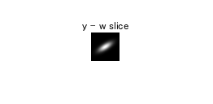 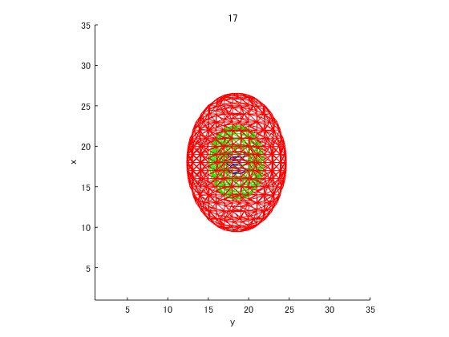 Slope 0.2
close all
CP06_show_shear_kernel(s,out_size, 0.2);
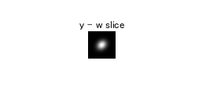 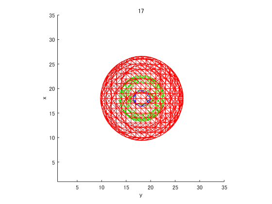 Applying the filter
We can already use this to do refocusing.
I can't really tell whether the results are any better with the more elaborate filter used further below.
x = load('IMG_0099__Decoded.LFToolbox.mat'); lf = x.LF; % Extract only inner 7x7 colors for confident % parts of the image (outermost boundary pixels have 0 confidence everywhere!), c.f. test_LF.m lffc = uint16toUnorm(lf(8-3:8+3,8-3:8+3,3:end-2,3:end-2,1:3)); % ca. 1.5 GB/4
Foreground
spat = 0.5; ang = 7; std = [ang,ang, spat,spat]; sz = ceil([7 7 spat*3 spat*3]); slope = 0.4; gauss = gaussian4d(sz,covariance_matrix_shear4(std, slope)); conved = convn(lffc, gauss, 'valid'); close all imshow_in_figure(2*squeeze(conved), ['4d gaussian with slope ' num2str(slope)]);
Background
slope = -0.4; gauss = gaussian4d(sz,covariance_matrix_shear4(std, slope)); conved = convn(lffc, gauss, 'valid'); close all imshow_in_figure(2*squeeze(conved), ['4d gaussian with slope ' num2str(slope)]);
3.2 Image synthesis reconstruction without aliasing
Filtering in stages..
Comparing the results using three different spatial standard deviations to blur
the light field images
close all slope = -0.4; CP06_3_2_show_spatial_blur(lffc, slope, 0.2) CP06_3_2_show_spatial_blur(lffc, slope, 1) % this blurs the foregroud more, making the effect nicer CP06_3_2_show_spatial_blur(lffc, slope, 3)% takes a very long time (and looks horrible)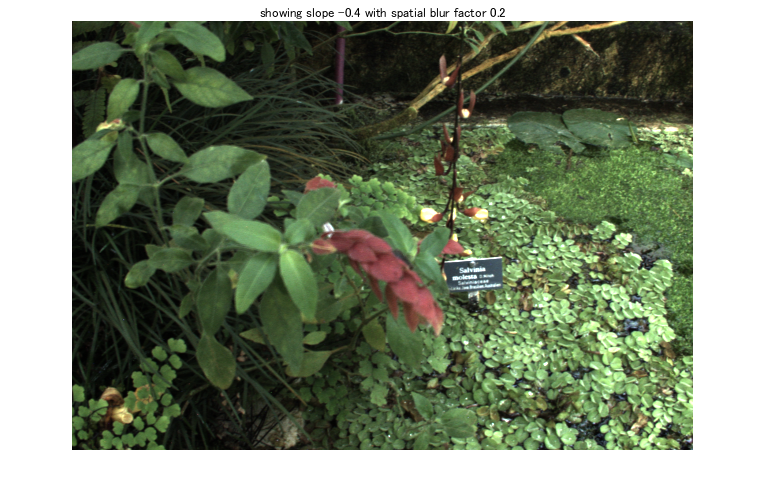
 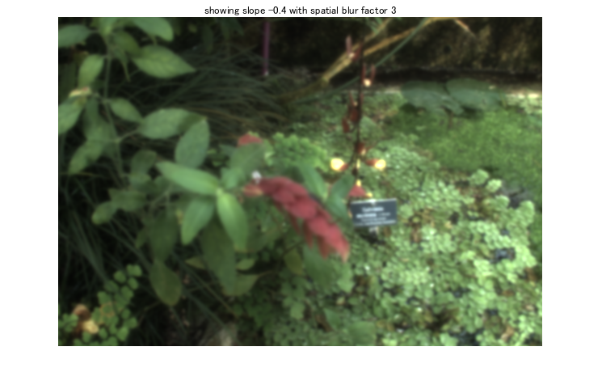
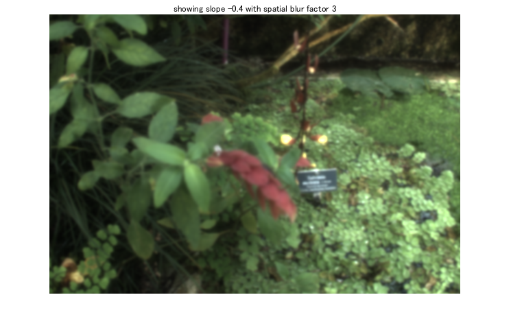 Visualize at least two focus planes using your implementation
with the intermediate filtered results:
- spatial and angular lowpass as well as their convolution
- ears, i.e. angular-lowpass minus spatial lowpass (a kind of sharpening effect that is later added to the result)
Background
close all
CP06_3_2_show_plane_with_intermediates(lffc, -0.4)
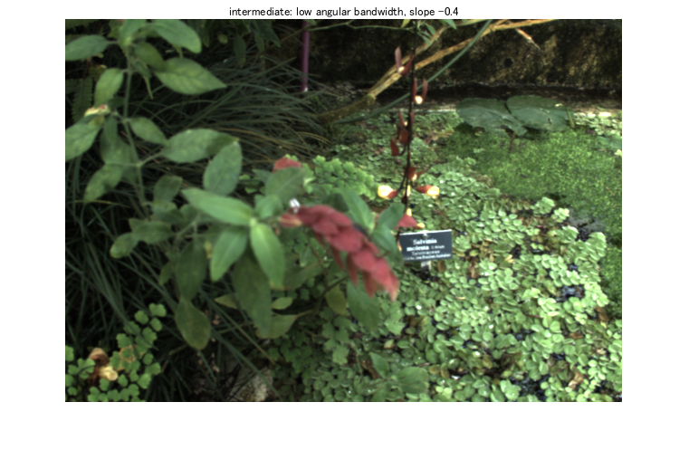 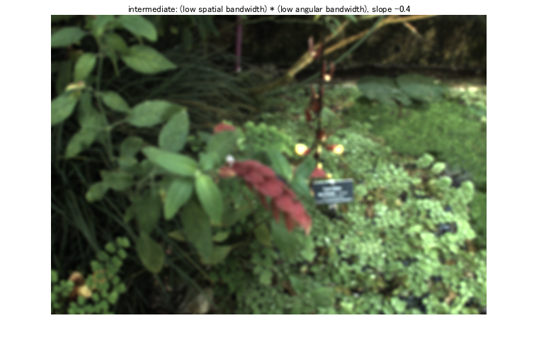 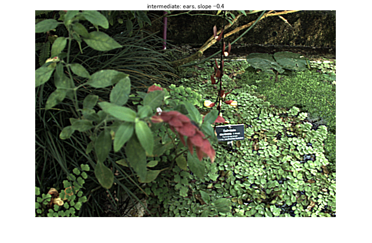 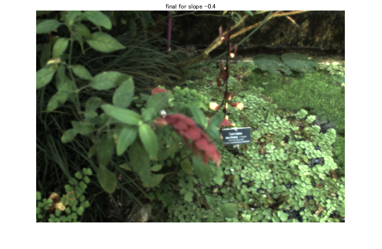 Foreground
close all
CP06_3_2_show_plane_with_intermediates(lffc, 0.4)

3.3 Comparison with LFFiltShiftSum
I am not controlling the blur kernel sizes they are using, and maybe they have another algorithm. Therefore the results are not exactly the same as mine.
As I mentioned earlier, I don't know if everything works as well as it could in my implementation, or whether I have chosen nice parameters.
Background
close all slope = -0.4; r = LFFiltShiftSum(lf, slope); imshow_in_figure(2*r(:,:,1:3), ['LFFiltShiftSum, ' num2str(slope) ' slope']);
...............
Foreground
close all slope = 0.4; r = LFFiltShiftSum(lf, slope); imshow_in_figure(2*r(:,:,1:3), ['LFFiltShiftSum, ' num2str(slope) ' slope']);
...............
Lytro Desktop result
see myresult lytroresult bg.png and myresult lytroresult fg.png to realize how much more superior their blurring & color correction is ;)